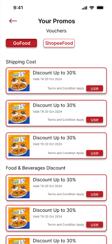
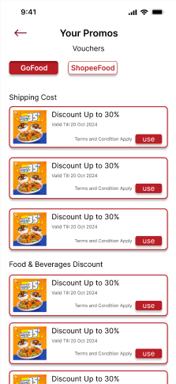

Skills
Figma - Intermediate
Canva - Advanced
Photoshop - Basic
illustrator - Basic
 CSS - Basic
CSS - Basic
 HTML - Basic
HTML - Basic
 Javascript - Basic
Javascript - Basic
C++ - Basic
SQL - Basic
Java - Basic
Tableau - Basic
 PowerBI - Basic
PowerBI - Basic
 
